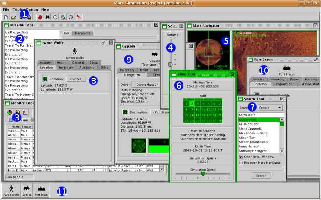

Mars Simulation Project
|
|  |
| Main Window |
The Mars Simulation Project's main window contains the following components:
Please send questions or comments to mars-sim-users@lists.sourceforge.net
Mars Simulation Project copyright © Scott Davis, 2008
Map data courtesy of NASA Jet Propulsion Laboratory